پذيرش > اخبار > برابری، صلح، آزادی


 برابری، صلح، آزادی برابری، صلح، آزادی
21 اسفند 1390 - گزارشی از مراسم هشت مارس برگزار شده در تهران - نسخه قابل چاپ
تا قانون خانواده برابر: مراسم هشت مارس امسال، 1390، توسط جمعی از فعالان حقوق زن در تهران و با حضور تعدادی از کنشگران و فعالان برابرخواه دیگر شهرهای کشور برگزار گردید.
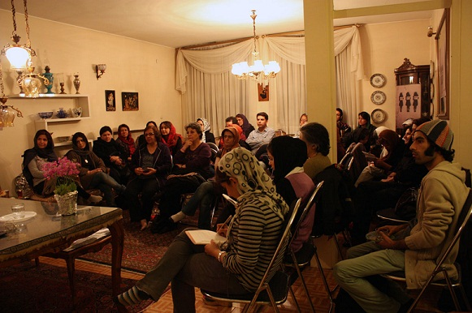
در ابتدای مراسم نیکزاد زنگنه با تبریک این روز، تاریخچه مختصری از چگونگی پیدایش این روز و تصویب قطعنامه سازمان ملل متحد در سال 1977 و نامگذاری هشتم مارس به نام روز جهانی زن خواند و اظهار امیدواری کرد که در سالهای آینده امکان برگزاری اینگونه مراسم در شرایط بهتر و آزادتری فراهم گردد. همچنین یادی کرد از زنان دربندی که این هشت مارس و هشت مارس های گذشته به علت حضور در زندان و احکام سنگینی که گرفته اند، امکان حضور و بودن در این گونه مراسم ها را نداشته اند. به همین مناسبت از ژیلا بنی یعقوب فعال حقوق زنان که به تازگی کتابی را در خصوص زنان زندانی با عنوان «زنان دربند 209 اوین» که توسط انتشارات باران در سوئد منتشر شده است، دعوت گردید تا به عنوان اولین سخنران مراسم توضیحاتی را در خصوص این کتاب و دلایل نگارش آن ارائه دهد.
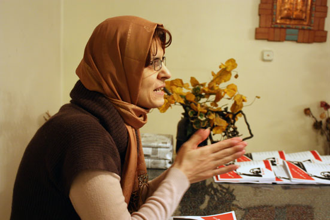
دوره قهرمان ها به سر نرسیده است
ژیلا بنی یعقوب در مورد کتابش گفت: "این کتاب صرفاً به موضوع زنان در زندان نپرداخته است بلکه سعی شده به زمینه های چگونگی شکل گیری تجمع 22 خرداد سال 85 که منجر به دستگیری 70 نفر از زنان و مردان برابری خواه گردید، پرداخته شود. بخشی از کتاب به این موضوع و بخش دیگری به وقایع بعد از دستگیری و ورود به بند 209 زنان زندانی می پردازد." ژیلا بنی یعقوب در مورد این بخش گفت: "قسمت دیگری از کتاب خاطرات «بهمن احمدی امویی» همسرم در باره 22 خرداد 85 است او از جمله مردانی بود که به همراه 30 مرد برابری خواه و مدافع حقوق زنان دیگر که در تمام خبرها فقط نام سه چهار نفر از آنها برده شده است و اسمی از بقیه آنها برده نشده است ولی در همان روز دستگیر و روانه زندان شده اند.ب ا چاپ خاطرات بهمن در این کتاب امیدواریم که گام کوچکی برای زنده نگه داشتن خاطره و یاد فداکاری این مردان برابری خواه برداشته باشیم."
در ادامه بنی یعقوب یادی کرد از نازنین خسروانی روزنامه نگار، که به تازگی برای اجرای حکم شش سال زندانش، به اوین فراخوانده شده است و گفت: "قصد قهرمان پروری ندارم و در شرایطی که مقاومت نکردن به ارزش تبدیل شده است، وجود افرادی چون نسرین ستوده، نازنین خسروانی، عالیه اقدام دوست و... به ما یادآوری می کند که عصر مقاومت به پایان نرسیده و برخلاف حرفهایی که زده می شود دوره آرمانگرایی به سر نیامده است و هنوز هستند مردان و زنانی که به خاطر باورها و آرمانها و اهداف حقوق بشری که دارند، در زندان ها مقاومت می کنند و تن به سازش نمیدهند" .
بنی یعقوب در ادامه گفت: "اتفاقاً ارزش کار نسرین ستوده در شرایطی که همسر و دو فرزندش تنها هستند، بیشتر مشخص میشود که چه جانانه مقاومت میکند و از زندگی شخصی خود میگذرد."
در ادامه برنامه، از محبوبه کرمی فعال حقوق زنان که در حال حاضر برای اجرای حکم 3 سال زندانش، در بند زندان زنان اوین به سر می برد، یاد شد.
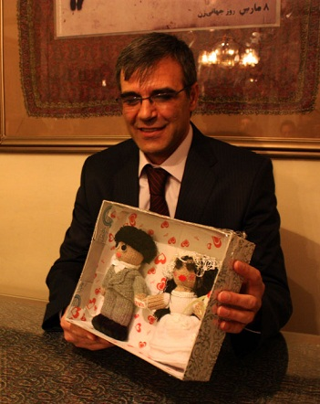
پیشکش زنان بند نسوان برای جشن عروسی لیلا توسلی
سپس از رضا خندان، همسر نسرین ستوده دعوت شد تا برای دقایقی در ارتباط با وضعیت نسرین ستوده صحبت کند. رضا خندان در ابتدای سخنان خود سلام نسرین ستوده را به تمامی همراهان و دوستان او رساند و این روز را به تمامی میهمان ها تبریک گفت و تشکر کرد از تمامی کسانی که خانواده زندانیان سیاسی و عقیدتی را تنها نگذاشته اند و در این دو سه سال گذشته همواره در کنارشان بوده اند. در ادامه هدیه ساخت دست زنان بند نسوان اوین را که برای جشن عروسی لیلا توسلی ساخته بودند، به میهمانها نشان داد و یادی کرد از خانواده توسلی که همواره عزیزانی را در پشت میله های زندان داشته اند.
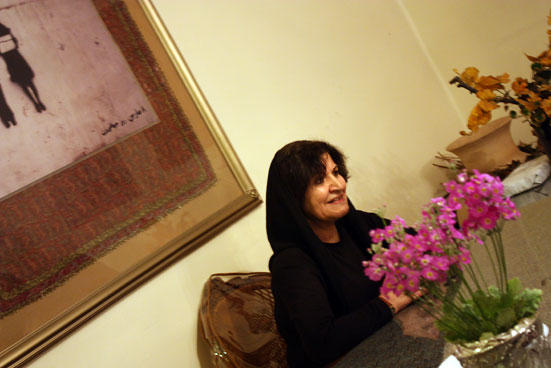
فعالان حقوق زن با فشارهای روز افزون عقب نمی نشینند
بعد از سخنان کوتاه آقای خندان، از عالیه اقدام دوست فعال حقوق زنان که بعد از طی طولانی ترین دوره محکومیت در بین فعالان حقوق زن در ایران به تازگی آزاد شده است، برای ایراد سخنرانی دعوت شد. عالیه اقدام دوست در ابتدا این روز را به تمامی زنان و فعالان حقوق زن تبریک گفت و اظهار خوشحالی کرد که فعالان حقوق زن در این سالها به تلاش خود برای رسیدن به برابری ادامه داده اند و حتی یک قدم هم عقب ننشسته اند.
اقدام دوست همچنین یادی کرد از مراسم هشت مارس هایی که در زندان به همراه دیگر زنان زندانی از جمله مرحوم هاله سحابی در سال های 88 و 89 برگزار کرده اند.
به هر دوی این عزیزان هدیه ای به رسم تقدیر توسط برگزارکنندگان مراسم اهدا شد.
بعد از سخنان عالیه اقدام دوست، یادی شد از عبدالفتاح سلطانی وکیل دادگستری که به تازگی حکم 18 سال زندان و تبعید به برازجان را دریافت کرده است.
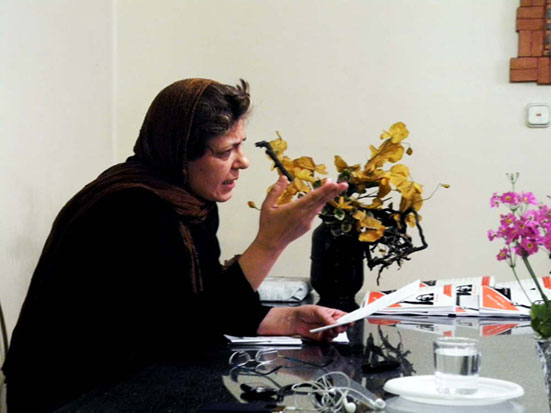
لازمه صلح، شادی و امیدواری است
در ادامه برنامه، نوبت به مادران صلح رسید و از شهلا فروزانفر یکی از مادران صلح دعوت شد تا در ارتباط با جنگ و تحریم ها و تأثیرات آن بر زندگی زنان صحبت کند. فروزانفر در ابتدای سخنان خود از جنگ ایران و عراق گفت. از مجروحان و جانبازانی یاد کرد که در دوران جنگ به دلیل صدمات جدی، چهره های خود را از دست داده اند به طوری که حتی خانواده و بچه های آنها از روبرو شدن و هم صحبت شدن با آنها واهمه داشتند.
شهلا فروزانفر در ادامه سخنان خود از شهر ایلام گفت که در جنگ ایران و عراق در تمام دوران هشت ساله جنگ مردمانش مجبور بودند که در جنگل های بلوط زندگی کنند. و از بچه هایی گفت که در ایلام همچنان قربانی مین های به جا مانده از جنگ هستند. کودکان بدون دست و پایی که همچنان در شهر ایلام دیده می شود.
خانم فروزانفر ادامه داد که فرآیند دموکراسی و جریان دموکراسی خواهی اولین قربانیان جنگ هستند. از آنجا که زنان جزء بزرگترین گروه دموکراسی خواه در هر جامعه ای هستند، در زمان جنگ با بیشترین برخوردها و محدودیت ها و سرکوب ها مواجه می گردند.
شهلا فروزانفر همچنین از تحریم و عواقب آن گفت. اینکه ایران 31 سال است که درگیر تحریم های همه جانبه بوده و در شرایط تحریم خدمات آموزشی و بهداشتی ضربه های جدی می بینند. و غالباً کشورها برای افزایش بودجه های نظامی خود، بودجه های آموزش و بهداشت را کاهش می دهند.
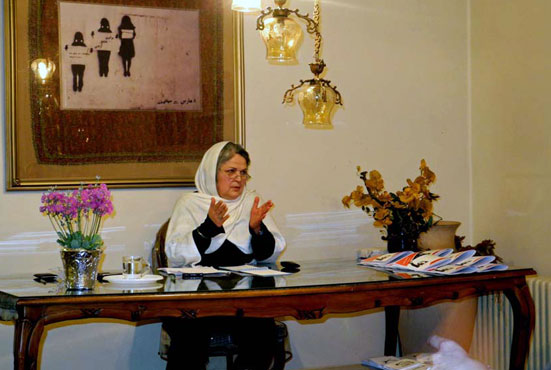
جنبش زنان امروز، رهبر محور نیست
بعد از سخنان شهلا فروزانفر، از مینو مرتاضی دعوت شد تا به این سوال که "آیا جنبش زنان مرده است؟" پاسخ گوید. مینو مرتاضی در ابتدای سخنان خود گفت به عنوان یک عضو از خانواده ملی- مذهبی که همواه برای برگزاری این چنین مراسمی با مشکل روبرو بوده و در دو سال اخیر نه تنها اجازه برگزاری این دست مراسم را در محیط عمومی که حتی در محیط خصوصی هم نداشته است، اما امروز توانسته است با وجود تمام این محدودیت ها در مراسمی شرکت کند که برای بزرگداشت هشتم مارس روز جهانی زن در ایران برگزار گردیده؛ می گوید: "جنبش زنان به علت همین انعطاف پذیری که دارد، همیشه زنده می ماند."
خانم مرتاضی تفاوت فعالان حقوق زن هم نسل خود با نسل فعلی را در عدم رهبر محور بودن نسل جدید فعالان حقوق زن دانست و اضافه کرد: "هم نسلان او به عنوان نسل انقلاب، آرمان گرا و رهبر محور بودند. رابطه آنها با رهبرانشان همانند رابطه مراد و مرید بود. اما در جنبش فعلی زنان به جرات می توان گفت در سی ساله گذشته با وجود کنشگران فعال و شاخص در حوزه زنان، جنبش زنان هیچ گاه رهبری نداشته است."
او ادامه داد بسیاری از مادران و زنان زندانی که در حال حاضر در زندان هستند، از نگاه کلاسیکی که در گذشته داشته اند به شیوه نو و مدرن اجتماعی امروز تغییر نگرش داده اند.
در ادامه مراسم یادی شد از نرگس محمدی عضو کانون مدافعان حقوق بشر در ایران که حکم شش سال زندان او در دادگاه تجدید نظر تأیید شده است.
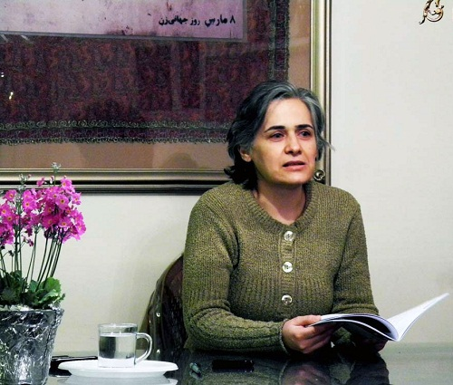
زنان پنهان، زنانی که دیده نمیشوند
در ادامه از هاله صفرزاده فعال حقوق زنان و کارگری، دعوت بعمل آمد تا برای تشریح اثرات تحریم و فشارهای روز افزونی که بر زنان وارد می گردد، چند دقیقه ای به سخنرانی بپردازد. خانم صفرزاده در ابتدای سخنان خود با اشاره به پرسشی که مرتاضی مطرح کرده بود، گفت تا زمانی که در جوامع نابرابری و بی عدالتی وجود دارد هیچ جنبشی نخواهد مرد. آنقدر تبعیض و نابربری علیه زنان در جامعه ما زیاد است که امکان ندارد جنبش زنان دیگر وجود نداشته باشد.
هاله صفرزاده همچنین به دهه شصت اشاره کرد که در اوج فضای سیاه آن روزها، اولین حرکت هایی که انجام گرفت توسط زن هایی در مناطق محروم مثل اسلامشهر بود که برای آب به خیابانها ریختند. همان زنانی که از حداقل آگاهی ها برخور دار بودند و غالباً از چشم بسیاری پنهان می مانند در آن زمان به خیابانها ریختند و بیشترین هزینه ها را پرداختند.
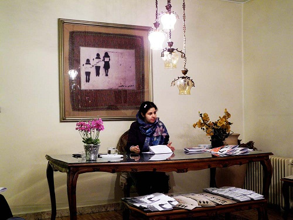
خدمت نیمه وقت زنان، طرح جدیدی برای به حاشیه راندن زنان
مریم رحمانی سخنران بعدی مراسم بود که با اشاره به طرح های محدود کننده ای که برای زنان در زمینه اشتغال در چند ساله اخیر توسط دولت ایجاد شده است، به طرح جدید خدمت نیمه وقت زنان در ادارات، اشاره نمود که قرار است در بودجه سال 91 لحاظ گردد و خواستار کنشی سریع از سوی کنشگران و فعالان حقوق زن در این زمینه شد.
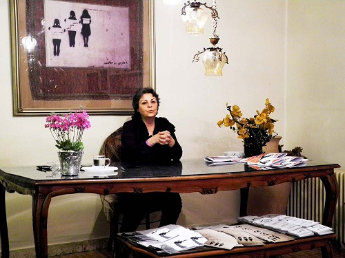
افزایش خشونت علیه زنان در سایه جنگ و تحریم
ناهید جعفری از اعضای کمپین یک میلیون امضاء نیز ضمن تبریک این روز گفت: خشونت علیه زنان با وجود تمامی تلاش هایی که برای متوقف کردن آن توسط گروه های مختلف زنان از جمله کمپین یک میلیون امضاء صورت گرفته است، همچنان ادامه دارد و این خشونت ها در سایه تحریم ها، جنگ و فشارهایی که بر زنان و مردان و افراد خانواده وارد میشود، بیشتر گسترش می یابد.
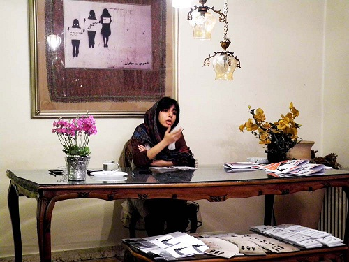
ضعف قوانین در زمینه مقابله با خشونت علیه زنان
در ادامه برنامه از ستاره هاشمی، دانشجوی حقوق خواسته شد که در ارتباط با قوانین حقوقی و جزایی مرتبط با زنان در ایران صحبت کند. ستاره هاشمی در ابتدای سخنان خود احکام صادره برای نسرین ستوده، عبدالفتاح سلطانی و نرگس محمدی را مایه شرم نظام قضایی ایران دانست و در ادامه گفت: "متأسفانه خشونت علیه زنان در حقوق کیفری ایران جرم محسوب نمی شود و چه بسا قانون گذار به صور مختلف سعی کرده که سلطه مردان بر زنان را گسترش دهد. وجود قوانینی چون تمکین، سنگسار و عدم مقابله با قتل های ناموسی را می توان از جمله این قوانین برشمرد."
او در ادامه اظهار داشت که قوانین قضایی فعلی در ایران به دلیل عدم مواجهه قانون گذار با زنان خشونت دیده، اثر بازدارندگی و منع خشونت علیه زنان را ندارد. و از سوی دیگر احکام صادره برای جرایمی نظیر اسیدپاشی و تجاوز چنان سنگین و مغایر با اصول اولیه حقوق بشری است که مجالی را برای دفاع فعالان حقوق زن باقی نمی گذارد.
ستاره هاشمی در خاتمه اظهار امیدواری کرد که امیدوار است که در آینده دیوارهای میان قوانین و زندگی روزمره زنان برداشته شود و شاهد اصلاح قوانین جزایی و کیفری در ایران باشیم.
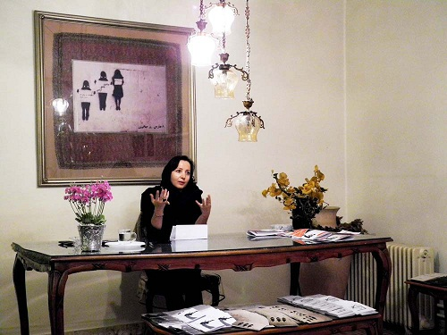
زنان بی چهره، قربانیان خاموش اسیدپاشی در ایران
به دنبال بحث خشونت علیه زنان در ایران و سایر کشورها از عالیه مطلب زاده از اعضای کمپین حمایت از قربانیان اسیدپاشی در ایران دعوت شد تا در خصوص قربانیان اسیدپاشی و دلایل تشکیل این کمپین به سخنرانی بپردازد. مطلب زاده اسیدپاشی را غیر انسانی ترین شکل خشونت دانست که متأسفانه آمار آن در کشور در حال افزایش است و هر روز شاهد موارد جدید و دردناکی از اسیدپاشی هستیم. خانم مطلب زاده از قربانیان اسیدپاشی که 90 درصد آنها را زنان تشکیل می دهند، یاد کرد که بعد از این هجوم های وحشیانه با ازدست دادن بینایی و چهره خود گویی هویت و خود واقعی خود را از دست می دهند و به دلیل طولانی و پرهزینه بودن مراحل درمانی خود غالباً در میانه راه حتی از حمایت اعضای نزدیک خانوده خود نیز محروم می شوند.
مطلب زاده در ادامه صحبت های خود به ابهامات قانونی برای پیشگیری و کاهش این نوع خشونت اشاره داشت و اظهار امیدواری نمود تا با تلاش های بیشتر بتوان این موانع را جهت بازدارندگی این خشونت در کشور بوجود آورد.
در انتها خانم مطلب زاده به راه اندازی کمپین حمایت از قربانیان اسیدپاشی در ایران اشاره کرد که برای بازگشت به زندگی نیاز به حمایت های همه جانبه دارند. افرادی که غالباً از اقشار فرودست جامعه هستند و توانایی پرداخت هزینه های درمانی سنگین بعد از مواجهه با این تهاجمات را ندارند.
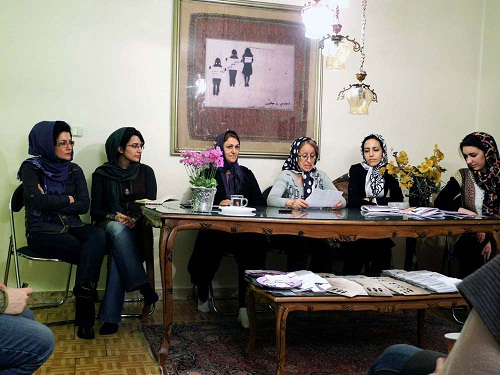
قم، پرتبعیض ترین شهر علیه زنان در ایران
در خاتمه مراسم از فعالان حقوق زنان در سایر شهرها که در این مراسم حضور بعمل آورده بودند، دعوت شد تا گزارش کوتاهی از عملکرد خود و همراهانشان در شهرهای خود ارائه دهند.
در ابتدا فعالان حقوق زن شهر رشت به شرح برنامه و فعالیت های خود در این شهر پرداختند و جمع آوری امضاء برای کمپین یک میلیون امضاء و اعتراض به قانون جنجالی حمایت از خانوده، برگزاری گلگشت های ماهیانه را از جمله فعالیت های فعالان شهر رشت برشمردند.
نماینده شهر مشهد و ساری نیز که در این در مراسم حضور داشت به برگزاری کارگاه های مختلف در این شهر و برگزاری مراسم در روزهای خاصی نظیر 25 نوامبر، 8 مارس و سالروز تأسیس کمپین یک میلیون امضاء اشاره کرد.
در ادامه یکی از فعالان قم، این شهر را یکی از پرتبعیض ترین شهرهای ایران علیه زنان دانست که بسیاری از زنان این شهر، به شرایط تبعیض آمیز زندگی خود خو گرفته اند و یا آن را تحمل می کنند. همچنین به فاطمه مسجدی و مریم بیگدلی از فعالان حقوق زن در قم اشاره کرد که به خاطر فعالیت های برابر خواهانه خود شش ماه حبس را تحمل کرده اند.
از کرج هم فعالانی حضور داشتند که کوتاه به چگونگی فعالیت های خود در این شهرها پرداختند.
ارسال به
بالاترین
،
توییتر
،
فریندفید
،
فیسبوک
در همين بخش :
 پروین ذبیحی برنده جایزه حقوق بشری سازمان غيردولتى اتريشى سودويند شد پروین ذبیحی برنده جایزه حقوق بشری سازمان غيردولتى اتريشى سودويند شد
پخش کارت پستال و بروشور در روز جهانی زن در تهران
تمدید زمان برای امضای بیانیهی جمعی از فعالان زن به مناسبت هشت مارس
مجوزی که در نطفه خفه شد
بیش از 2000 امضا در اعتراض به تبعیض های آموزشی به مجلس تحویل داده شد
ديگر بخش ها :
طرح یک میلیون امضا
|
مقالات
|
سایت نوشته ها
|
اخبار
|
گزارش كمپين
|
گفت و گو
|
علیه سکوت
|
كوچه به كوچه
|
نامه های شما
|
گزارش ویژه
|
گفتگو با اعضا
|
ویژه سالگرد کمپین
|
تصویر برابری
|
دل آرام علی
|
تریبون
|
مقالات
|
تاریخ شفاهی
|
خارج از چارچوب
|
کتابخانه
|
درباره کمپین
|
کمپین در شهرها
|
کمپین در بند
|
صدای تغییر
|
ویژه 22 خرداد
|
لایحه حمایت از خانواده
|
گالری
|
عشا مومنی
|
امیر یعقوبعلی
|
خدیجه مقدم
|
راحله عسگری زاده و نسیم خسروی
|
پروین اردلان،جلوه جواهری، مریم حسین خواه، ناهید کشاورز
|
زینب پیغمبرزاده
|
سعیده امین، سارا ایمانیان، محبوبه حسین زاده، ناهید کشاورز و همایون نامی
|
احترام شادفر
|
نسیم سرابندی زاده،فاطمه دهدشتی
|
وبلاگ مهمان
|
پرونده خرم آباد
|
دستگیری ها
|
مریم مالک
|
پرستو اللهیاری
|
مهرنوش اعتمادی
|
سمیه رشیدی
|
Other Languages
|
همراهان
|
«فراخوان کمپین ده روز با بهاره هدایت»
| English
|